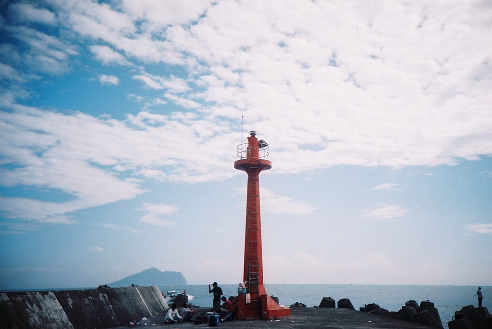

怎麼玩
填一張猜票單，撕下存根私訊給主辦人。開票後主辦人一貼，誰最準馬上算出來。

開票前
- 填暱稱和兩個數字1 分鐘
- 撕下存根，私訊主辦人16:00 前
開票後
- 以中選會公告為準輸入結果
- 票數差距最接近500 分
- 得票率差距最接近500 分
得票率差距是兩人得票率相減。例如 52.30％ 對 45.10％，差 7.20％。
兩項都最準1,000 分
我的猜票單
你的暱稱
猜林國漳贏
？票
？％
把整段代碼私訊給主辦人才算完成。要修改就重撕一張再傳。
一樣準，就平分
兩項分開比。往上猜或往下猜都沒關係，只看誰離結果最近。
- 一人最準該項 500 分全拿
- 兩人一樣近每人 250 分
- 四人一樣近每人 125 分
- 差 300 票多猜 300 和少猜 300 一樣近
- 兩項都最準一個人拿 1,000 分